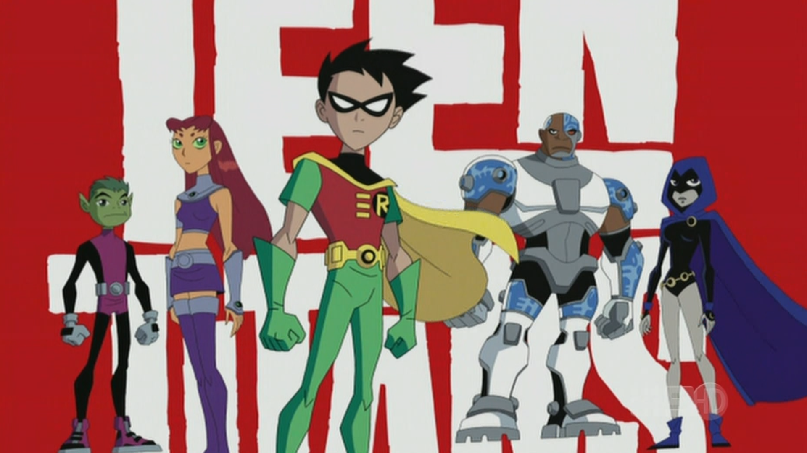

About him
Beast Boy was bitten by one of the monkeys and contracted a serious illness called Sakutia. To save him, his parents attempted to cure him with a new serum, which bestowed him with his shape-changing abilities. As a side effect, his skin, hair, and eyes turned green. Later in his life, Beast Boy's parents died in a boating accident. After they died, Beast Boy was interested in a superhero team called the Doom Patrol and was determined to join them. He broke into their headquarters and was treated as an intruder, but his efforts to escape capture impressed them, thus earning his membership on the team.
The teen Titans
Characteristics
- Vegan
- Green Skin
- Matamorphosis